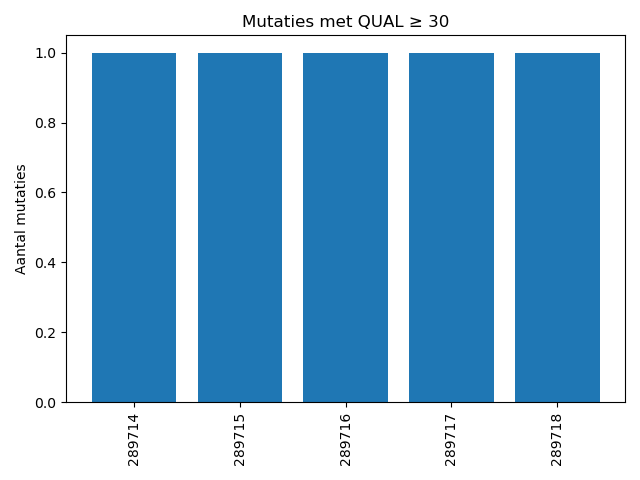

Hieronder is het voorbeeld van het resultaat met de gedetecteerde mutaties en de bijhorende mapping data.
{% if region_error %}{{ region_error }}
{% endif %}{{ uitslag.status }}
{% endif %} {% if tabel_snps %}| Positie | REF | ALT |
|---|---|---|
| {{ positie }} | {{ waarden[0] }} | {{ waarden[1] }} |
Staaftabel van de mutaties en op welke plekken deze voorkomen en hoelaat

{% endif %} {% if vcf_doc %}Download VCF bestand...
{% endif %}